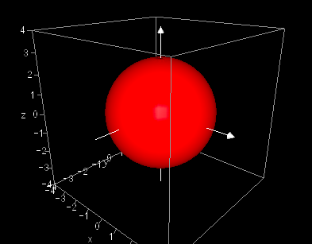
The sphere is given by the Cartesian equation:
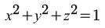It can also be expressed parametrically as:
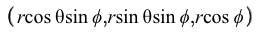The derivative of the vector-valued function with respect to 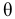 is:
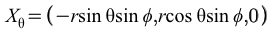The derivative of the vector-valued function with respect to 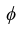 is:
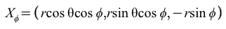Now:
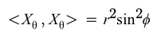
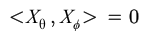
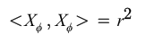
So the first fundamental form coefficients are:
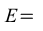
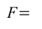
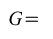
The cross product of 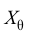 and 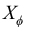 is:
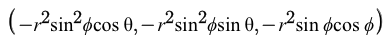Its norm is 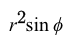. Therefore, the unit normal vector is:
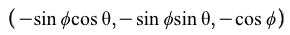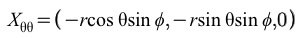
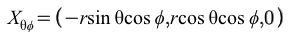
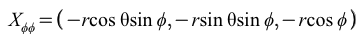
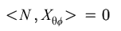
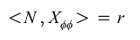
Therefore, the second fundamental form coefficients are:
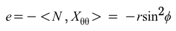
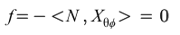

The Gaussian curvature is:
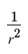The mean curvature is:
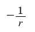Visualization of vectors on the sphere:
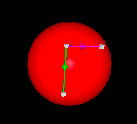